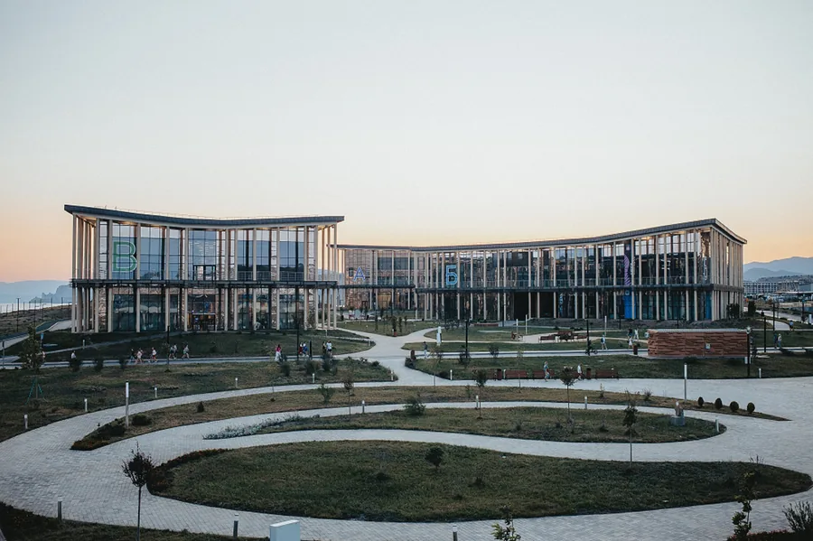
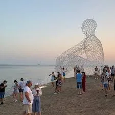

Как добраться из Феодосии в Судак
От Феодосии до Судака — около 50 километров по живописной горной дороге через посёлок Морское. На машине дорога занимает примерно 1 ч — 1 ч 15 мин, на маршрутке — около двух часов. Если едете из «Палермо», выезжать удобно после завтрака около 9:00, чтобы успеть к открытию крепости.
- На машине: по трассе Е-97 / Р-29, бензина — около 5–6 литров туда-обратно.
- На маршрутке: от автостанции Феодосии до автостанции Судака, отправление каждый час.
- С экскурсией: однодневные туры из Феодосии стоят 2500–4000 ₽ с человека и обычно включают Судак + Новый Свет.
Полные маршруты до Феодосии и обратно — в подробном гиде по дороге.

Генуэзская крепость в Судаке
Главная достопримечательность Судака и одна из самых сохранившихся средневековых крепостей Крыма. Стены и башни XIV века стоят на высоком мысе над морем — это тот самый кадр с открыток.
- Часы работы (2026): ежедневно с 9:00 до 20:00 в высокий сезон.
- Билет: около 600–700 ₽ для взрослых, льготы для пенсионеров и детей.
- Сколько закладывать: минимум 1,5–2 часа, удобная обувь обязательна.
- Аудиогид: можно скачать через мобильное приложение крепости — рассказ хороший.
Лучшее время для прогулки — утро (до 11) или вечер (после 17): меньше солнца и меньше людей. С верхней площадки виден весь Судакский залив и горы вокруг.

Новый Свет и тропа Голицына
В семи километрах от Судака начинается посёлок Новый Свет — место, где князь Лев Голицын основал производство шампанских вин. Тут три бухты невероятного цвета (Зелёная, Синяя, Голубая) и легендарная пешеходная тропа Голицына, вырубленная в скалах ещё в конце XIX века.
- Тропа Голицына: кольцевой маршрут 5,5 км, 2,5–3 часа неспешной ходьбы. Перепад небольшой, но местами скользко после дождя.
- Грот Шаляпина: огромный естественный грот, где, по легенде, пел оперный певец.
- Завод «Новый Свет»: экскурсии и дегустации классических игристых, в 2026 году обязательна онлайн-запись.
- Можжевеловая роща: пройдите её хотя бы 100 метров — воздух здесь действительно лечит.
Парк «Таврида.АРТ» в 2026 году
В 25 минутах езды от Судака, в посёлке Прибрежное (бывший «Маяк»), расположен крупнейший в России молодёжный арт-кластер «Таврида.АРТ». В 2026 году он снова принимает летние смены и фестивали для молодых режиссёров, музыкантов, художников и архитекторов.
- Когда работает для гостей: в рамках открытых фестивалей и арт-уикендов с июня по сентябрь.
- Что увидеть: мурал-парк, фестивальную набережную, инсталляции от выпускников, открытые лекции.
- Цена входа: на большинство открытых дней — бесплатно, но обязательна онлайн-регистрация на сайте.
- Сколько закладывать: 3–4 часа, удобнее ехать на машине.
Если вы первый раз в этих местах — совмещайте «Тавриду» с Новым Светом и крепостью в Судаке. Это идеальный пример «культура + море + вино» в одном дне.
Пляжи Судака и Нового Света
- Центральный пляж Судака: кварцевый песок, вход пологий, идеален с детьми, но в высокий сезон людно.
- Кипарисовая аллея: платный участок с шезлонгами и сервисом.
- Зелёная и Синяя бухты Нового Света: бирюзовая вода, скалистый вход, для удовольствия — маска и ласты.
- Бухта Капсель: ещё мало освоенный пляж в сторону «Тавриды», для любителей дикого отдыха.
Где поесть в Судаке
- Кафе на набережной: рыба, мидии и крымские бокалы — выбирайте места с открытой кухней.
- Винные бары в Новом Свете: дегустации местного игристого с лёгкими закусками.
- Чебуречные у крепости: сытно и быстро, средний чек — 600–900 ₽ на двоих.
Маршрут на день из Феодосии
- 09:00 — выезд из «Палермо» после завтрака.
- 10:00 — Генуэзская крепость в Судаке (1,5–2 часа).
- 12:30 — обед в центре Судака или на набережной.
- 13:30 — переезд в Новый Свет (15 минут).
- 14:00 — тропа Голицына и купание в Зелёной бухте (2,5–3 часа).
- 17:30 — дегустация на заводе «Новый Свет» (по записи).
- 18:30 — выезд обратно, в Феодосии — около 20:00.
Советы и лайфхаки на 2026 год
- Билет в крепость и запись на дегустацию — заранее онлайн.
- Обувь только закрытая и удобная — на тропе Голицына шлёпки не работают.
- Возьмите 2 литра воды на человека и крем 50+ — тени почти нет.
- Если едете на машине, заправляйтесь в Судаке: между Морским и Прибрежным заправок мало.
- Парк «Таврида» работает циклически — проверьте календарь событий заранее.
Частые вопросы
Можно ли успеть Судак и Новый Свет за один день?
Да, если выезжать рано утром и не задерживаться больше 2 часов в крепости. Если хочется ещё и «Тавриду» — лучше разделить на два дня.
Подходит ли тропа Голицына для детей?
С детьми от 7–8 лет и с устойчивой обувью — да. Малышам и людям с боязнью высоты будет сложно.
Где удобнее купаться — в Судаке или Новом Свете?
Если важен песок и пологий вход — Судак. Если нужны прозрачная вода и фотогеничные бухты — Новый Свет.
Сколько стоит дегустация в «Новом Свете» в 2026 году?
Базовый сет — около 1500 ₽ с человека, расширенный — до 3000 ₽. Запись обязательна.
Хотите остановиться в Феодосии?
В гостевом доме «Палермо» на Советской, 38 — тихий двор, домашние завтрака и охраняемая парковка.